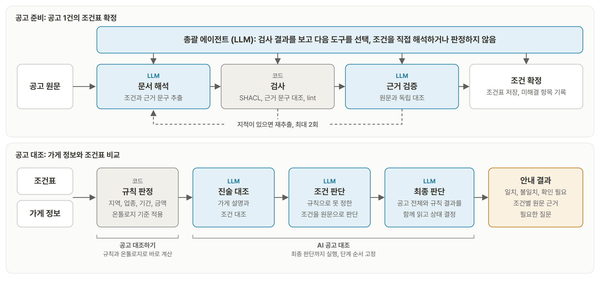
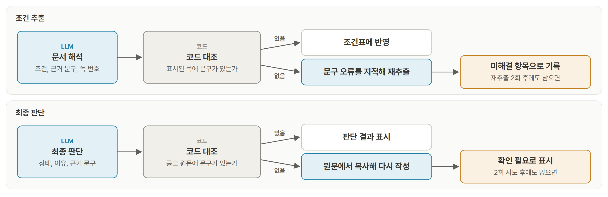
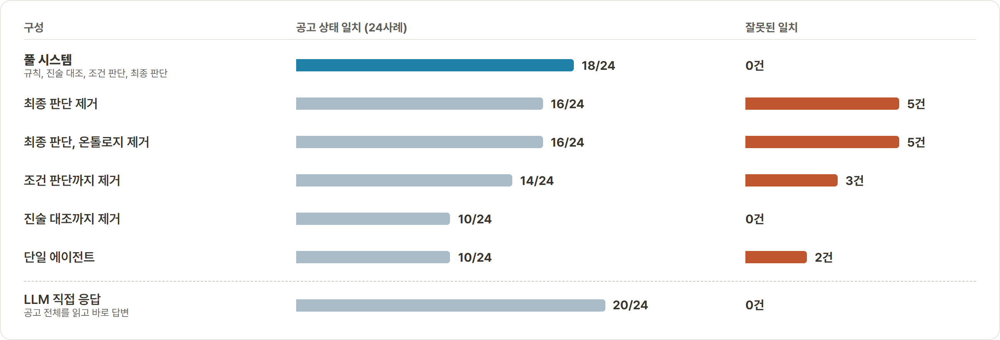
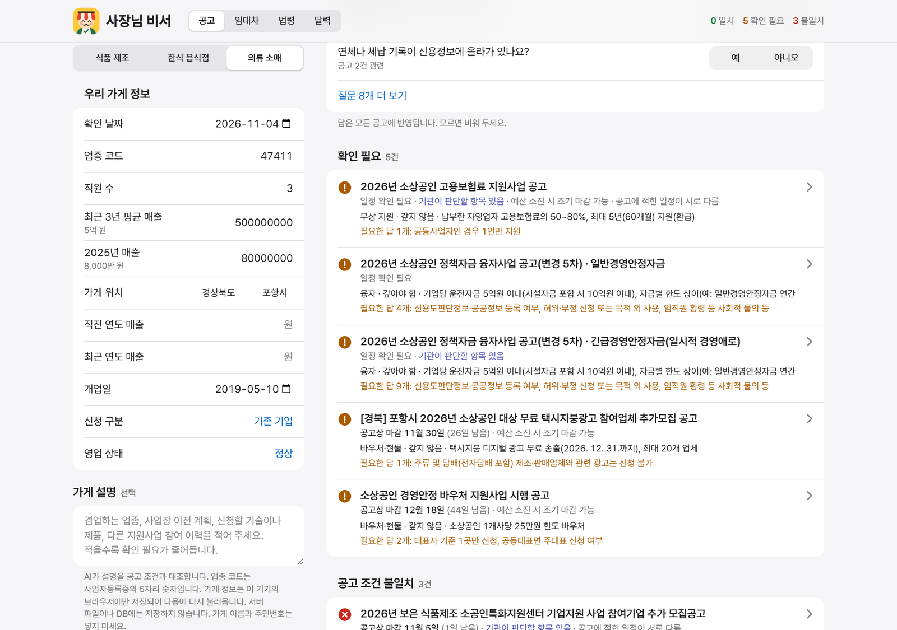
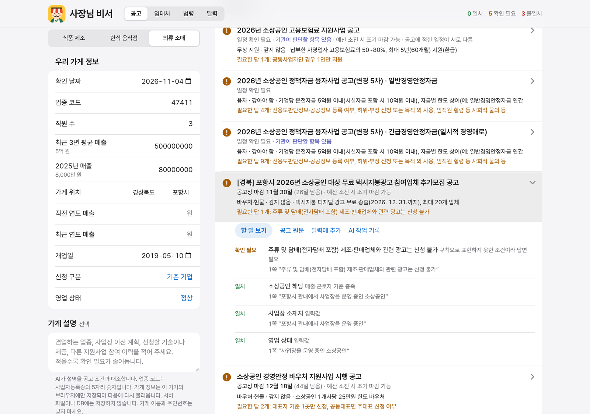
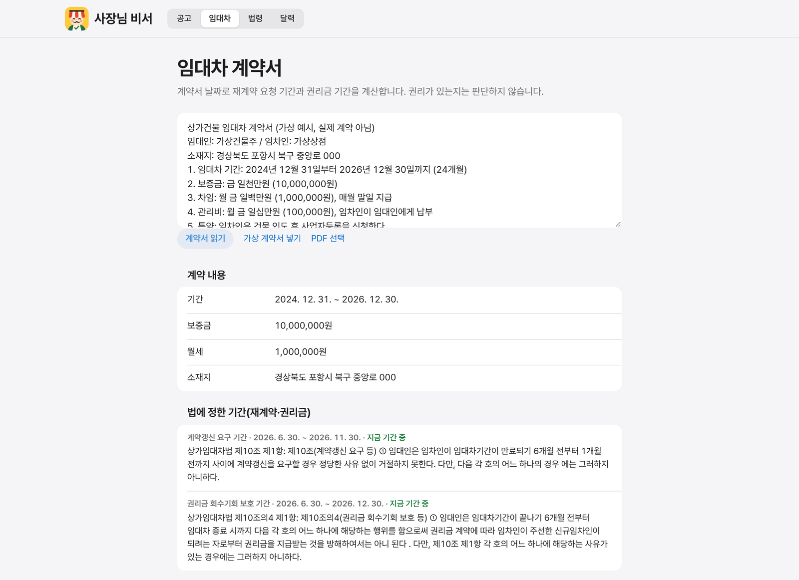
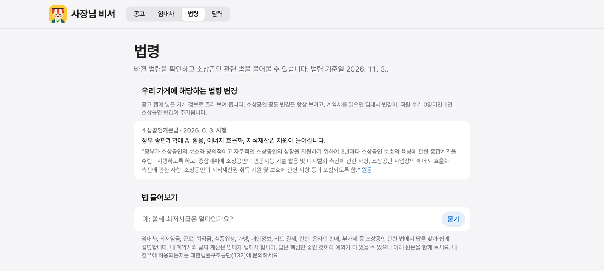
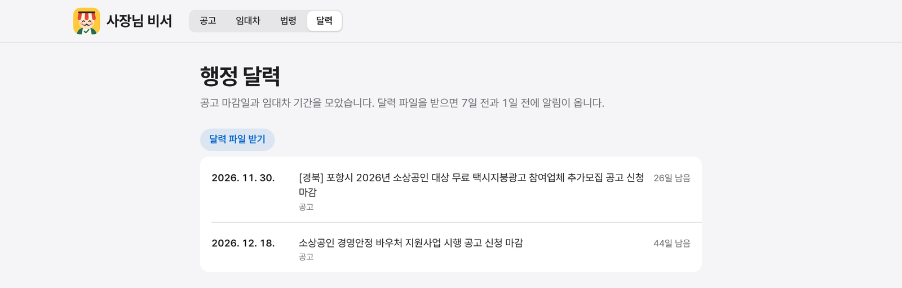

소상공인 지원공고의 자격 조건과 가게 정보를 대조해 일치, 불일치, 확인 필요를 조건별 원문 근거와 함께 안내하는 서비스입니다. 역할별 에이전트 12개, 규칙 코드, RDF 온톨로지를 결합했습니다. 공고 10건, 가상 사례 30개 측정에서 공고 상태 27건이 정답과 일치했고 잘못된 일치는 0건입니다.
01개요
| 단계 | 접근 | 핵심 결과 |
|---|---|---|
| 공고 조건 확정 | 총괄 에이전트가 검사 결과를 보고 추출, 검사, 근거 검증, 재추출을 조율 | 1~4차 공고 18건 중 12건 재추출, 근거 검증 31회 |
| 공고 대조 | 규칙, 진술 대조, 조건 판단, 최종 판단을 고정된 순서로 실행 | 첫 측정 공고 상태 일치 18/24, 잘못된 일치 0건 |
| 근거 문구 확인 | LLM이 인용한 문구가 원문에 있는지 코드로 대조 | 최종 판단 응답 132건의 근거 문구 전부 원문 확인 |
| 역할 제거 비교 | 역할을 하나씩 뺀 구성과 LLM 직접 응답을 같은 사례로 비교 | 잘못된 일치: 최종 판단 제거 5건, 포함 0건 |
| 임대차, 법령, 달력 | 계약서 값 추출과 기간 계산, 법령 21종 조문 1,512개 안내, 일정 통합 | 가상 계약서 5건 값 추출 5/5, 법령 질문 20개 Codex 대조 맞음 18, 부분 2, 틀림 0 |
02문제 정의
03시스템 구조

혼합 구조를 택한 이유는 판단 근거를 원문까지 추적하고, 틀린 일치 안내가 어느 단계에서 생기는지 확인하기 위해서입니다. 공고 상태 일치 건수만 보면 LLM 직접 응답이 더 높았습니다. 온톨로지와 멀티에이전트는 처음부터 설계 조건이기도 했습니다.
총괄 에이전트만 검사 결과에 따라 다음 도구를 고릅니다. 공고 판단은 순서가 고정된 파이프라인이라 단계를 건너뛰지 않습니다.
역할 분담
| 맡은 쪽 | 하는 일 | 이유 |
|---|---|---|
| LLM | 공고 조건 추출, 애매한 조건 해석, 쉬운 설명 | 공고 문구가 제각각이라 규칙만으로 읽기 어려움 |
| LLM (최종 판단) | 공고 전체와 규칙, 온톨로지 결과를 함께 읽고 최종 상태 결정 | 규칙만으로 정하지 못하는 공고 문맥까지 반영 |
| 규칙 코드 | 지역, 업종, 기간 판정과 금액, 기간 계산 | 같은 입력에 같은 결과가 나오고 오류 원인을 찾기 쉬움 |
| 온톨로지, SHACL | 조건 구조화, 형식 검사 | 조건과 근거를 같은 틀로 저장하고 잘못된 형식을 걸러냄 |
| 코드 대조 | 근거 문구가 원문에 있는지 확인 | LLM의 자기 검증에 맡기지 않음 |
| 구간 | 에이전트 | 맡은 일 |
|---|---|---|
| 공고 준비 | 총괄, 문서 해석, 근거 검증 | 다음 행동 결정, 조건 추출, 원문 대조 |
| 공고 대조 | 진술 대조, 조건 판단, 일치 재확인, 최종 판단 | 가게 설명과 조건 대조, 규칙으로 못 정한 조건 판단, 규칙이 낸 일치 재확인, 최종 상태 결정 |
| 안내 | 프로필 인터뷰, 안내 작성 | 빠진 값만 질문, 안내 카드 작성 |
| 추가 기능 | 임대차 문서 해석, 법령 안내, 자금 해석 | 계약서 값 추출, 조문 인용 답변, 공고의 돈 항목 추출 |
사용 데이터
| 종류 | 규모 | 비고 |
|---|---|---|
| 공개 공고 | 57건 (소상공인 대상 46건) | 중소벤처기업부 사업공고, 기업마당. 서비스 탑재 15건 |
| 법령 | 21종 조문 1,512개 | 국가법령정보센터 수집 |
| 측정 사례 | 가상 가게 사례 114개 | 1~4차 108개, 5차 6개 |
| 정답 | 측정 사례 전체 | AI 초안과 Codex 감수. 5차는 Codex가 시스템 결과를 보지 않고 작성 |
04근거 검증과 재추출

총괄 에이전트의 재추출 횟수는 최대 2회이고, 지적이 없거나 한도에 도달하면 조건을 확정합니다. 코드 대조의 대상은 인용 문구의 존재 여부입니다.
| 항목 (1~4차 공고 18건) | 결과 |
|---|---|
| 근거 검증 실행 | 31회 |
| 지적 없이 통과 | 16회 (회차 기준) |
| 검증 지적 | 23건 |
| 재추출이 일어난 공고 | 18건 중 12건 |
| 인용 오류 | 0건 |
| 최종 판단 근거 문구 | 응답 132건 중 132건 원문 확인 |
재추출 전후 필드와 값 일치 F1은 1차 0.822에서 0.837, 2차 0.869에서 0.878, 3차 0.765에서 0.776으로 올랐고, 공고 1건만 재추출된 4차는 0.857로 같았습니다. 4차에서 조건표만 쓴 구성의 잘못된 일치는 재추출이 없을 때 2건, 있을 때 0건입니다.
05평가
공고마다 가상 가게 사례를 만들고 일치, 불일치, 확인 필요 정답을 정한 뒤 시스템 결론과 비교했습니다. 1~3차는 오답을 보며 개선한 개발 회차이고, 4차와 5차는 코드와 정답의 해시를 고정한 뒤 실행했습니다.
| 항목 | 결과 | 뜻 |
|---|---|---|
| 공고 상태 정답 일치 | 18/24 | 가게와 공고 조건을 대조한 결론이 정답과 같은 사례 수 (코드와 정답을 고정한 첫 측정) |
| 잘못된 일치 | 0건 | 정답이 불일치나 확인 필요인데 일치라고 답한 사례 수 |
| 공고 접수기간 상태 | 24/24 | 기준일이 공고의 신청기간 안인지, 이미 마감됐는지를 맞힌 사례 수 |
| 확인 필요 재현율 | 7/7 | 정답이 확인 필요인 사례를 확인 필요로 답한 비율 (4차 재실행) |
측정 과정
| 측정 | 공고, 사례 | 일치 | 잘못된 일치 | 조건 |
|---|---|---|---|---|
| 4차 첫 측정 | 4건, 24개 | 18/24 | 0 | 코드와 정답 해시를 고정한 뒤 첫 실행 |
| 4차 재실행 | 4건, 24개 | 21/24 | 0 | 오답 확인 후 최종 판단 지시문을 고치고 같은 사례로 재실행 |
| 5차 추가 측정 | 6건, 6개 | 6/6 | 0 | 지시문 수정을 반영한 코드와 정답 해시를 고정한 뒤 1회 실행. 정답은 Codex 작성 |
| 사장님 답변 반영 | 10건, 30개 | 28/30 | 0 | 서비스가 묻는 질문에 답한 결과 |
역할 제거 비교

최종 판단을 빼면 일치 수가 16건으로 줄고 잘못된 일치가 5건 생겼습니다. 조건 판단과 진술 대조까지 차례로 빼면 일치 수가 14건, 10건으로 줄었습니다. 공고 상태 일치 건수는 LLM 직접 응답이 20건으로 풀 시스템 18건보다 높았고, 잘못된 일치는 둘 다 0건입니다.
정답과 다른 사례
사장님 답변을 반영한 뒤 정답과 다른 2건은 모두 확인 필요로 답한 사례입니다. 서비스는 공고에서 부족한 내용과 문의처를 안내합니다.
| 사례 | 정답 → 시스템 | 공고에서 부족한 점 |
|---|---|---|
| 카페를 겸업하는 빵 공장 | 불일치 → 확인 필요 | 본문은 기술 기준, 각주는 영위기업 기준이라 겸업 기업에 무엇을 적용하는지 공고에 없음. 보호 기술의 용도도 입력에 없음 |
| 직원 없는 1인 기업 | 불일치 → 확인 필요 | 본문 제외 항목에 없고 별첨 표에만 있어, 제외 사유인지와 무엇이 우선인지 공고에 없음 |
06서비스 화면





07자료
https://sajangnim-biseo.vercel.app
https://github.com/hjiyun/sajangnim-biseo
시연 영상: docs/demo/demo.mp4
측정 기록: results/RESULTS.md